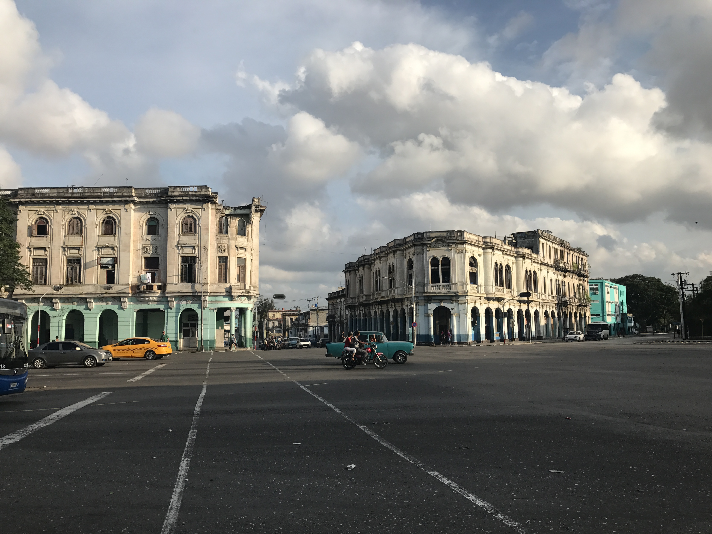
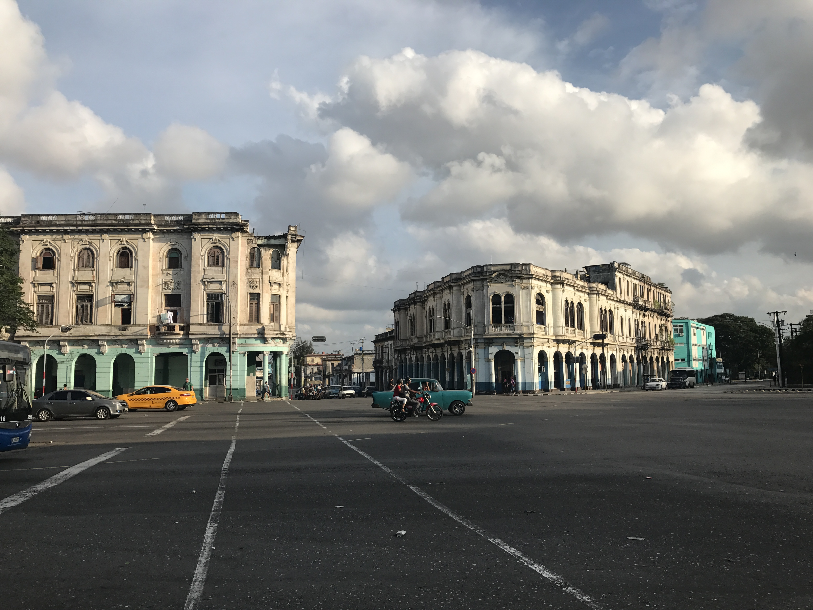

hello!

Hi! I'm Gab.
I grew up in North Carolina and have spent time in Thailand, Zambia, and Philadelphia. I went to school at UNC where I studied environmental science, computer science, and information science.
I love maps and programming and enjoy applying my technical skills to public service.
{ spatial analysis, programming, and research }
Eviction Geography As a Summer of Maps fellow at Azavea, I worked with our nonprofit client Jane Place Neighborhood Sustainability Initiative to map and analyze novel eviction data. I geocoded addresses pulled from courthouse records and designed cartography and graphics to visualize the eviction crisis in New Orleans. JPNSI was interested in how historic redlining play a role in the landscape of evictions today. I found that New Orleans city blocks that were graded D (meaning 'risky', 'hazardous', based on discrimination against people of color) by the Homeowner's Loan Corporation in the New Deal era experience an eviction rate 7 times higher than city blocks that were graded A (offered loans), illuminating the longstanding impact of the race-based maps.
The final report is here
Money in Politics My second nonprofit client at Azavea was Committee of Seventy, a nonpartisan advocate for better government. We were interested in how campaign finance plays into ward endorsements, voter turnout and election results for the 2017 District Attorney Democratic primary. The big lift of the project was to clean and feature engineer the campaign finance data in order to ultimately combine it with data from the American Community Survey and PA voter file. I found that wards tend to underreport data given to them by candidates. I also found wards endorsed the highest candidate bidder in several instances.
Read about my methodology for cleaning the data here
Other maps A collection of spatial analysis projects from coursework and applications.

.png)
Python I've coded a search engine program and completed a data analysis program using pandas and NumPy
Java The first language I learned! I've coded abstract data types and various sorting, searching, and hashing algorithms from my data structures course
R My biggest endeavor in R has been publishing open source scripts to GitHub for cleaning and visualizing campaign finance data in Philly as a Summer of Maps fellow at Azavea.
Oil Palm GHG Emissions While studying abroad in Bangkok, Thailand I published research on mitigating the greenhouse gas emissions of oil palm biorefineries in Thailand through redirecting and repurposing wasted oil palm biomass.
{ climbing, hiking, and travelling }
 


linked in here